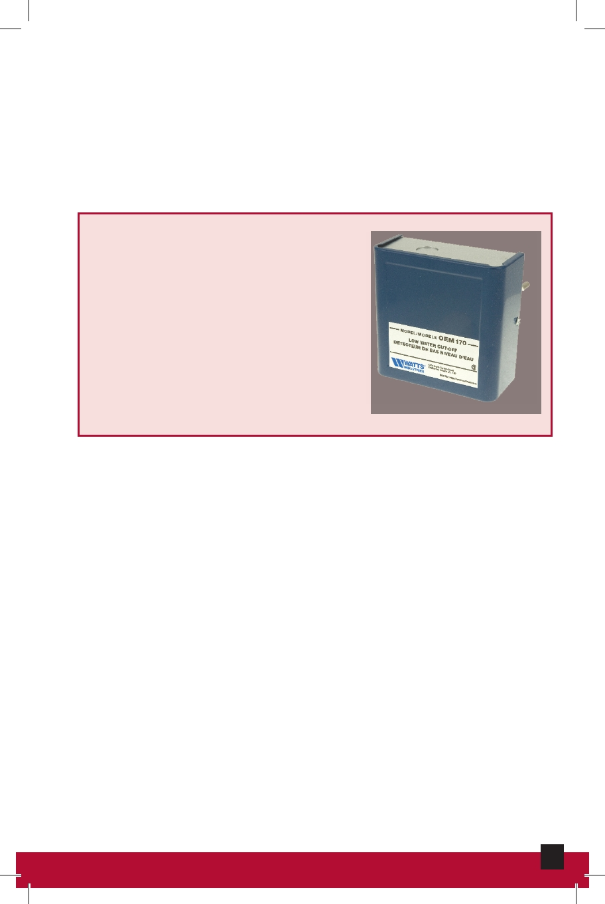

Limit Switch
Designed to open if the temperature exceeds the desired
operating temperature of the furnace. The contacts close if
the temperature returns to an acceptable level.
Low-Water Cutoff
The low-water cutoff is a safety
device that de-energizes the
boiler if its water falls below a
certain level.
Low-Water Cutoff
Point of No Pressure Change
The one point in the piping system where the pump cannot
affect the pressure in the system.
53
HVAC Maintenance and Repair